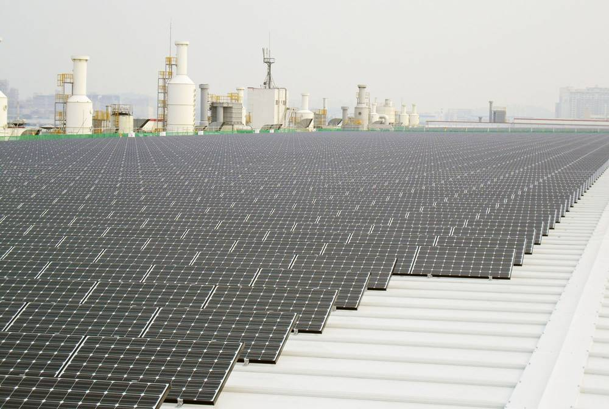

부산시, 미음·국제물류산단 입주기업 지붕에 380MW 태양광 계획…8개 기관과 협약

2027년까지 민간자본 7,000억 원 조달 구상, 참여기업은 지붕 임대수익
부산시는 2024년 6월 11일 부산진해경제자유구역청, 한국에너지공단, 한강에셋자산운용 등 8개 기관과 '부산산단 지붕형태양광 프로젝트' 추진 업무협약을 맺었다. 강서구 미음·국제물류산업단지 입주기업 700곳의 지붕 등 유휴공간에 2027년까지 모두 380MW의 태양광을 설치하고, 사업비 7,000억 원은 전액 민간 자본으로 마련한다는 계획이다. 참여기업은 발전량에 따라 임대수익을 받으며, 자금조달은 한강에셋자산운용, 사업 운영은 발전법인 부산그린산단(주)이 맡기로 했다. 시는 성과가 나면 부산 39개 산단 전체로 넓혀 2,800MW까지 키운다는 구상을 밝혔다.
시민에너지 관점
380MW, 7,000억 원 규모를 산단 지붕에 올리겠다는 계획은 땅 갈등 없이 대규모 태양광을 놓을 수 있다는 점에서 눈여겨볼 만하다. 다만 민간 자본과 운용사가 주도하는 구조에서 입주기업은 지붕 임대료를 받는 데 그치고, 지역 시민의 소유와 수익 몫은 아직 보이지 않는다. 산단 지붕도 지역의 자원인 만큼 그 수익 일부가 지역에 남는 설계가 함께 가야 할 것으로 보인다. 협약이 실제 투자로 이어지는지, 그 과정에서 지역 몫이 생기는지 지켜봐야 한다.
출처: 신아일보 2024-06-12 정현숙 원문 보기
釜山市计划在美音、国际物流产业园入驻企业屋顶建设380MW太阳能，与8家机构签署协议
计划到2027年以民间资本筹集7,000亿韩元，参与企业获得屋顶租金收入
釜山市于2024年6月11日与釜山镇海经济自由区厅、韩国能源公团、韩江资产运用等8家机构签署了"釜山产业园屋顶太阳能项目"推进业务协议。计划到2027年，在江西区美音产业园和国际物流产业园700家入驻企业的屋顶等闲置空间安装共380MW太阳能设备，7,000亿韩元项目资金全部由民间资本筹集。参与企业按发电量获得租金收入，资金筹措由韩江资产运用负责，项目运营由发电法人釜山绿色产业园公司负责。釜山市表示，若取得成效，将扩大到釜山全部39个产业园，规模提升至2,800MW。
市民能源视角
在产业园屋顶建设380MW、7,000亿韩元规模项目的计划，无需土地纠纷即可布置大规模太阳能，这一点值得关注。但在民间资本和资产管理公司主导的结构下，入驻企业只能收取屋顶租金，目前还看不到当地市民的所有权和收益份额。产业园屋顶也是地方的资源，似乎应同时设计让部分收益留在当地。需要关注协议能否转化为实际投资，以及在此过程中能否形成地方份额。
来源: 新亚日报 2024-06-12 Jung Hyun-sook 查看原文
Busan plans 380MW of solar on factory roofs in Mieum and international logistics parks, signs pact with eight bodies
700 billion won to be raised from private capital by 2027; participating firms would earn roof rent
Busan Metropolitan City signed a business agreement on June 11, 2024, with eight organizations, including the Busan-Jinhae Free Economic Zone Authority, the Korea Energy Agency and Hangang Asset Management, to pursue a rooftop solar project for Busan industrial parks. The plan is to install a total of 380MW of solar on the roofs and other idle spaces of 700 tenant companies in the Mieum and international logistics industrial parks in Gangseo-gu by 2027, with the entire 700 billion won cost raised from private capital. Participating companies would receive rent based on generation, with Hangang Asset Management handling financing and the power company Busan Green Industrial Complex running the project. The city said that if the project succeeds it would expand it to all 39 industrial parks in Busan, up to 2,800MW.
Citizen Energy View
The plan to put 380MW, worth 700 billion won, on industrial park roofs is worth noting because it places large-scale solar without land conflicts. But in a structure led by private capital and an asset manager, tenant firms only collect roof rent, and no ownership or income share for local citizens is yet visible. Since industrial roofs are also a local resource, a design that keeps part of the income in the region appears to be needed alongside. Whether the pact turns into real investment, and whether a local share emerges along the way, should be watched.
Source: Shina Ilbo 2024-06-12 Jung Hyun-sook Read the original